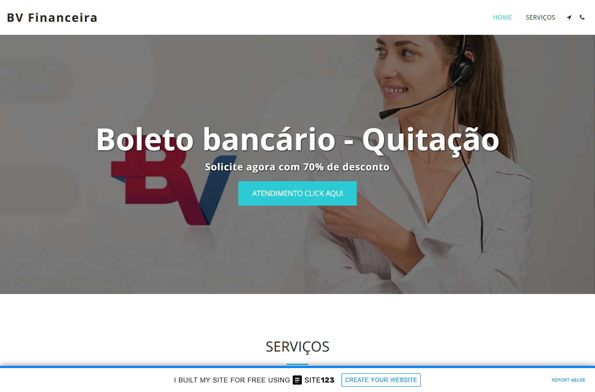
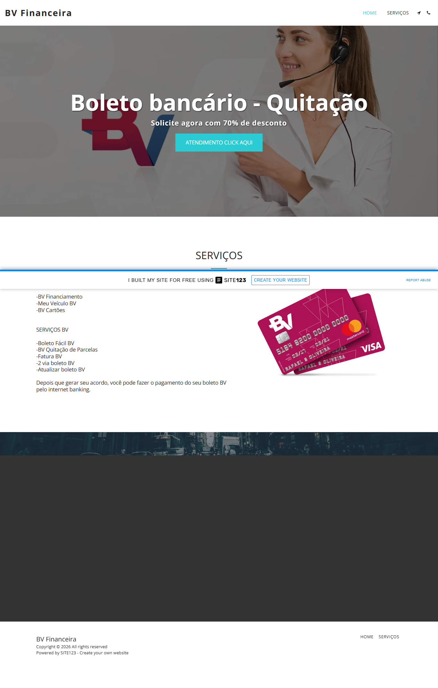

SIMIO · dossiê de candidato · campanha simio-20261119-174043-8bbc · gerado em 2026-11-19T21:22:03+00:00
https://5f19c19ae121e.site123.me/
STRONG_INDICATION Prioridade HIGH · Cenário D_STRONG_IMPERSONATION · Revisão humana: PENDING
Este dossiê apresenta indícios para apoio à auditoria. Não constitui conclusão regulatória. As conclusões automatizadas devem ser verificadas contra as evidências brutas abaixo (screenshots, catálogo e arquivos com hash). Conteúdo de terceiros é exibido como texto; links não são clicáveis por segurança.
A página apresenta fortes indícios de impersonação da marca (D_STRONG_IMPERSONATION). Hospedada em um domínio genérico de construtor de sites gratuito (site123.me), ela assume integralmente a identidade 'BV Financeira' no cabeçalho, título e rodapé, utilizando o logotipo e imagens de cartões da instituição sem identificar qualquer empresa responsável ou condição de correspondente. Além disso, realiza captação ativa via WhatsApp oferecendo serviços críticos de pós-venda (2ª via e atualização de boleto, fatura e quitação com 70% de desconto), cenário típico de indução do consumidor a erro ou possível fraude de boleto. [Revisor: CONFIRM] A hipótese do analista se sustenta integralmente nas evidências. A página hospedada em subdomínio gratuito (site123.me) apresenta-se exclusivamente como 'BV Financeira' no cabeçalho, título e rodapé de copyright, utiliza o logotipo e imagem de cartões do Banco BV em destaque e oferece serviços sensíveis de emissão/atualização de boleto e quitação de dívidas com desconto, direcionando o usuário para um número de WhatsApp sem qualquer transparência sobre a real entidade responsável.


| Ref | Tipo | Local | Conteúdo |
|---|---|---|---|
| E-URL | domain | url | URL final: https://5f19c19ae121e.site123.me/ (domínio: 5f19c19ae121e.site123.me) |
| E-COLLECT | network | collection | Status da coleta: OK; HTTP 202; ocorrências: network did not become idle (continuing) |
| E-DISC-001 | text | search_index | Índice de busca (grounding): site123.me — **Subdomínio em SITE123 (`site123.me`)** | **Link:** [Página no SITE123](https://vertexaisearch.cloud.google.com/grounding-api-redirect/AUZIYQEeE_2EeCaw2uQmFDUj2_0Scxzan_x8M4iYRQ1FAFttRxzByD2A08t8RiGbXWcpbe6Rezfm4h_Urb2KQ1qosfTXV478yZSUyRdQE0ABA-h-afB9G_2M74G2ZIlW) | Solicite agora com 70% de desconto"* | (incluindo *Boleto Fácil BV*, *BV Quitação de Parcelas*, *2 via boleto BV* e *Atualizar boleto BV*) sem identificar a empresa responsável pela página |
| E-SHOT-VIEWPORT | screenshot | viewport | evidence\C6dd0ea3359\attempt-1\viewport.png (sha256 afee8635a063dd70…) |
| E-SHOT-FULL | screenshot | page | evidence\C6dd0ea3359\attempt-1\fullpage.png (sha256 90e7cd31f349dad0…) |
| E-TITLE | title | head | BV Financeira - Boleto bancário - Quitação |
| E-META-1 | meta | head | description: BV Financeira - Boleto bancário - Quitação |
| E-META-2 | meta | head | og:site_name: BV Financeira |
| E-META-3 | meta | head | og:title: BV Financeira - Boleto bancário - Quitação |
| E-META-4 | meta | head | og:description: BV Financeira - Boleto bancário - Quitação |
| E-CANONICAL | meta | head | https://5f19c19ae121e.site123.me/ |
| E-HEAD-1 | heading | page | Boleto bancário - Quitação |
| E-HEAD-2 | heading | page | SERVIÇOS |
| E-FOLD | text | viewport (acima da dobra) | BV Financeira Home Serviços Boleto bancário - Quitação Solicite agora com 70% de desconto atendimento click aqui Serviços QUAIS DÍVIDAS DO BANCO BV VOCÊ PODE NEGOCIAR ONLINE AQUI? -BV Financiamento -Meu Veículo BV -BV Cartões SERVIÇOS BV -Boleto Fácil BV -BV Quitação de Parcelas -Fatura BV -2 via boleto BV -Atualizar boleto BV Depois que gerar seu acordo, você pode fazer o pagamento do seu boleto BV pelo internet banking. I BUILT MY SITE FOR FREE USING CREATE YOUR WEBSITE Report Abuse |
| E-FTR | text | footer | BV Financeira Copyright © 2026 All rights reserved Powered by SITE123 - Create your own website HOME SERVIÇOS |
| E-NAV | nav | header | BV Financeira <https://5f19c19ae121e.site123.me/#page-top> | HOME <https://5f19c19ae121e.site123.me/#page-top> | SERVIÇOS <https://5f19c19ae121e.site123.me/#section-5f19c363de2d7> |
| E-CTA-1 | cta | page | ATENDIMENTO CLICK AQUI <https://5f19c19ae121e.site123.me/versions/2/include/external_redirect.php?websiteID=3961018&url=https%3A%2F%2Fwa.me%2F5511976922254> |
| E-CONTACT-1 | contact | page | ATENDIMENTO CLICK AQUI <https://5f19c19ae121e.site123.me/versions/2/include/external_redirect.php?websiteID=3961018&url=https%3A%2F%2Fwa.me%2F5511976922254> |
| E-CONTACT-2 | contact | page | 999-7777-000 <tel:999-7777-000> |
| E-IMG-1 | image | page (acima da dobra) | imagem alt='' src=https://static.s123-cdn-network-a.com/admin/InterfaceStatisFiles/allOther/ads/site123/brand_kit_2026/SITE123-Logo-2026/png/site123-logo-black.png?v=vc1795104470 (95x21, acima da dobra) |
| E-TXT-001 | text | page | BV Financeira |
| E-TXT-002 | text | page | Boleto bancário - Quitação |
| E-TXT-003 | text | page | ATENDIMENTO CLICK AQUI |
| E-TXT-004 | text | page | QUAIS DÍVIDAS DO BANCO BV VOCÊ PODE NEGOCIAR ONLINE AQUI? |
| E-TXT-005 | text | page | -BV Financiamento |
| E-TXT-006 | text | page | -Meu Veículo BV |
| E-TXT-007 | text | page | -BV Cartões |
| E-TXT-008 | text | page | SERVIÇOS BV |
| E-TXT-009 | text | page | -Boleto Fácil BV |
| E-TXT-010 | text | page | -BV Quitação de Parcelas |
| E-TXT-011 | text | page | -Fatura BV |
| E-TXT-012 | text | page | -2 via boleto BV |
| E-TXT-013 | text | page | -Atualizar boleto BV |
| E-TXT-014 | text | page | Depois que gerar seu acordo, você pode fazer o pagamento do seu boleto BV pelo internet banking. |
| E-TXT-015 | text | page | APROVEITE AS VANTAGENS Linhas de financiamento especiais, oportunidades de emprego, juros menores. Esses são alguns dos inúmeros benefícios que só quem possui o nome sem restrição tem. Por isso, negocie já suas pendências financeiras com o(a) BV e regularize seu nome. Assim, você também poderá ter acesso a esses benefícios, podendo voltar a sonhar com um futuro melhor para você e sua família. |
| E-TXT-016 | text | page | BV Financeira |
| Dimensão | Sinal | Achado | Refs |
|---|---|---|---|
| VISUAL_IDENTITY | CONFUSION | A página utiliza elementos visuais da marca (banner com logotipo BV e imagem de cartões BV) hospedados em plataforma gratuita de criação de sites (SITE123), simulando um portal de atendimento da instituição. | E-URL E-SHOT-VIEWPORT E-SHOT-FULL |
| DECLARED_COMMERCIAL_IDENTITY | CONFUSION | Apresenta-se exclusivamente como 'BV Financeira' no cabeçalho, título da página e aviso de direitos autorais no rodapé, sem declarar a identidade de qualquer terceiro. | E-TITLE E-NAV E-FTR E-TXT-001 |
| CORRESPONDENT_TRANSPARENCY | CONFUSION | Não há qualquer menção à condição de correspondente no País, parceiro comercial, razão social ou CNPJ do responsável pela página. | E-FOLD E-FTR E-SHOT-FULL |
| INSTITUTIONAL_LANGUAGE | CONFUSION | O texto convida o usuário a negociar dívidas do Banco BV online na própria página e reivindica copyright em nome de 'BV Financeira'. | E-TXT-004 E-TXT-015 E-FTR |
| LOGO_USAGE | CONFUSION | O logotipo da BV aparece em destaque na imagem de fundo do banner principal e nos cartões ilustrados na página, sem marca de terceiro. | E-SHOT-VIEWPORT E-SHOT-FULL |
| SERVICE_JOURNEY | CONFUSION | Oferece emissão de 2ª via de boleto, atualização de boleto, fatura e quitação de parcelas/contratos com promessa de 70% de desconto mediante clique para WhatsApp. | E-FOLD E-CTA-1 E-TXT-008 E-TXT-009 E-TXT-010 E-TXT-012 E-TXT-013 |
| CONTACT_CHANNELS | CONFUSION | Captação ativa para WhatsApp (+55 11 97692-2254) sem identificação do recebedor e presença de link telefônico placeholder ('999-7777-000'). | E-CTA-1 E-CONTACT-1 E-CONTACT-2 |
| CONSUMER_CONFUSION | CONFUSION | Elevado potencial de induzir o consumidor a acreditar que está em um canal oficial de renegociação e emissão de boletos da BV Financeira / Banco BV. | E-TITLE E-FOLD E-CTA-1 E-SHOT-VIEWPORT |
A página apresenta fortes indícios de impersonação da marca (D_STRONG_IMPERSONATION). Hospedada em um domínio genérico de construtor de sites gratuito (site123.me), ela assume integralmente a identidade 'BV Financeira' no cabeçalho, título e rodapé, utilizando o logotipo e imagens de cartões da instituição sem identificar qualquer empresa responsável ou condição de correspondente. Além disso, realiza captação ativa via WhatsApp oferecendo serviços críticos de pós-venda (2ª via e atualização de boleto, fatura e quitação com 70% de desconto), cenário típico de indução do consumidor a erro ou possível fraude de boleto.
Nenhum CNPJ ou razão social identificáveis no conteúdo coletado.
| Tipo | Valor | Ref | Contexto |
|---|---|---|---|
| domain | site123.me | E-URL | |
| institution_name_displayed | BV Financeira | E-META-2 | |
| ATENDIMENTO CLICK AQUI <https://5f19c19ae121e.site123.me/versions/2/include/external_redirect.php?websiteID=3961018&url=https%3A%2F%2Fwa.me%2F5511976922254> | E-CONTACT-1 |
Mapeamento indicativo para apoio à auditoria. Não constitui conclusão regulatória; a decisão definitiva pertence à auditoria.
Fonte: NORMATIVE
Art. 14. O contrato de correspondente deve estabelecer: [...] II - vedação à utilização, pelo contratado, de logomarca ou de outros atributos que sejam similares aos adotados pela instituição contratante em suas agências, postos de atendimento, sítio eletrônico na internet, aplicativo ou outras plataformas de comunicação em rede;
Hipótese: Uso de logomarca ou de atributos similares aos adotados pela contratante em seus canais. A norma disciplina correspondentes contratados; o responsável não foi identificado como correspondente.
Evidência observada: E-SHOT-FULL E-SHOT-VIEWPORT E-URL
Informação faltante:
Fonte: NORMATIVE
Art. 14. O contrato de correspondente deve estabelecer: [...] III - divulgação ao público, pelo contratado, de sua condição de prestador de serviços à instituição contratante, identificada pelo nome com que é conhecida no mercado, com descrição dos produtos e serviços oferecidos e canais de contato da instituição contratante, inclusive de sua ouvidoria, em local visível, em destaque e em formato legível, por meio de: a) sítio eletrônico do correspondente na internet, acessível na página inicial; b) aplicativo e outras plataformas de comunicação em rede do correspondente; [...]
Hipótese: Divulgação ao público da condição de prestador de serviços à contratante ausente, insuficiente ou sem destaque. A norma disciplina correspondentes contratados; o responsável não foi identificado como correspondente.
Evidência observada: E-CONTACT-1 E-CONTACT-2 E-CTA-1 E-FOLD E-FTR E-META-2 E-NAV E-SHOT-FULL E-SHOT-VIEWPORT E-TITLE E-TXT-001 E-TXT-004 E-TXT-015
Informação faltante:
Fonte: NORMATIVE
Art. 3º O correspondente atua por conta e sob as diretrizes da instituição contratante, que assume inteira responsabilidade pelo atendimento prestado aos clientes e usuários por meio do contratado.
Hipótese: Atendimento ao público prestado por meio do contratado em condições que podem não seguir as diretrizes da contratante. A norma disciplina correspondentes contratados; o responsável não foi identificado como correspondente.
Evidência observada: E-CONTACT-1 E-CONTACT-2 E-CTA-1 E-FOLD E-HEAD-1 E-TXT-008 E-TXT-009 E-TXT-010 E-TXT-011 E-TXT-012 E-TXT-013
Informação faltante:
Se o responsável não for correspondente contratado, os indícios podem caracterizar uso indevido de marca ou fraude, fora do escopo da Res. 4.935: avaliar encaminhamento às áreas jurídica/segurança.
Limitações: requisitos contratuais/internos não fornecidos: mapeamento limitado ao texto normativo
Decisão: CONFIRM → STRONG_INDICATION / HIGH
A hipótese do analista se sustenta integralmente nas evidências. A página hospedada em subdomínio gratuito (site123.me) apresenta-se exclusivamente como 'BV Financeira' no cabeçalho, título e rodapé de copyright, utiliza o logotipo e imagem de cartões do Banco BV em destaque e oferece serviços sensíveis de emissão/atualização de boleto e quitação de dívidas com desconto, direcionando o usuário para um número de WhatsApp sem qualquer transparência sobre a real entidade responsável.
| Tema | Severidade | Questionamento | Refs |
|---|---|---|---|
| evidence_sufficiency | NONE | As evidências coletadas comprovam de forma inequívoca o uso exclusivo da identidade visual e nominal ('BV Financeira') em plataforma gratuita de terceiros (site123.me), sem identificação de CNPJ ou razão social, ofertando serviços críticos de 2ª via/atualização de boleto e quitação com direcionamento para WhatsApp. | E-URL E-TITLE E-FOLD E-CTA-1 E-FTR E-SHOT-FULL |
| domain_attribution | MEDIUM | Responsável pela página não identificado; a conclusão sobre a marca não pode ser atribuída a um estabelecimento específico. | E-URL |
| Fonte | Consulta / hipótese | URL original | Título / trecho |
|---|---|---|---|
| grounding | sites ou landing pages de terceiros que oferecem 2ª via de boleto, quitação de contrato/financiamento com desconto, antecipação de parcelas, simulação ou atendimento do Banco BV (bv financeira) por WhatsApp ou 0800 apresentando-se como canal de atendimento do banco H3-service | https://5f19c19ae121e.site123.me/ | site123.me **Subdomínio em SITE123 (`site123.me`)** | **Link:** [Página no SITE123](https://vertexaisearch.cloud.google.com/grounding-api-redirect/AUZIYQEeE_2EeCaw2uQmFDUj2_0Scxzan_x8M4iYRQ1FAFttRxzByD2A08t8RiGbXWcpbe6Rezfm4h_Urb2KQ1qosfTXV478yZSUyRdQE0ABA-h-afB9G_2M74G2ZIlW) | Solicite agora com 70% de desconto"* | (incluindo *Boleto Fácil BV*, *BV Quitação de Parcelas*, *2 via boleto BV* e *Atualizar boleto BV*) sem identificar a empresa responsável pela página |
Original: https://5f19c19ae121e.site123.me/
Final: https://5f19c19ae121e.site123.me/
| Artefato | Caminho | SHA-256 | Bytes |
|---|---|---|---|
| screenshot_viewport | evidence\C6dd0ea3359\attempt-1\viewport.png | afee8635a063dd70d09554841534777e9bda27596c150ba1ba2673e5571c020c | 343680 |
| screenshot_full | evidence\C6dd0ea3359\attempt-1\fullpage.png | 90e7cd31f349dad09737eadecd0de423362c35d048d7686ee99b5fef6d616cec | 606821 |
| html | evidence\C6dd0ea3359\attempt-1\page.html.txt | 001592ae1527640494389f36ea332dd10c86aeeedebbfdb9e79c4f183f510a44 | 58860 |
| text | evidence\C6dd0ea3359\attempt-1\text.txt | 9736c48ebcb98c6b18ac9dbe54b5931a8b828c16dc8ca8d9f44250a6de2d7fc1 | 1044 |
| page_data | evidence\C6dd0ea3359\attempt-1\page.json | a8d71d5cbc92d07cfd9b90c6f1180b5999eb7f63521e8c99283875fea70b9fc1 | 6674 |
| Quando | De | Para | Nota |
|---|---|---|---|
| 2026-11-19T18:10:10+00:00 | DISCOVERED | QUEUED | prioritised (score 3.0) |
| 2026-11-19T18:13:34+00:00 | QUEUED | COLLECTING | |
| 2026-11-19T18:13:48+00:00 | COLLECTING | COLLECTED | |
| 2026-11-19T18:13:48+00:00 | COLLECTED | ANALYZING | |
| 2026-11-19T18:14:30+00:00 | ANALYZING | REVIEWING | |
| 2026-11-19T18:14:43+00:00 | REVIEWING | COMPLETED |